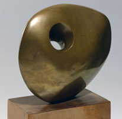
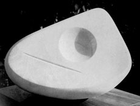

Holes
Holes
 Emptiness
Emptiness
 Nothing
Nothing
 Radical
Art
Radical
Art
 Holes
Holes
 Emptiness
Emptiness
 Nothing
Nothing
 Radical
Art
Radical
Art
Holes by Barbara Hepworth
Pierced Form, 1931 |
|
|
Pierced Hemisphere II, 1937 |
Helicoid in Sphere, 1938 |
Pierced Form, 1948/1949 |
Form Enclosed, 1951 |
Head (Chios), 1958 |
Head (Fetish), 1958 |

|
|
|
Curved Form (Pathmos), 1960 |
Epidauros II, 1960 |
Icon II, 1960 |
Image II, 1960 |
Mandala, 1960 |
Santorin, 1960 |
|
Hollow Form (Churinga III), 1960 |
|
Pierced Form (Amulet), 1961 |
Reclining Solitary Form (Amulet), 1961 |
Holed Hemisphere, 1962 |
Two Forms Pierced, 1961/1962 |
Upright Form (Gwithan), 1962 |
|
Three Forms (Porthmeor), 1963 |
Pierced Form, 1963 |
Pierced Form (Santorin), 1963 |
Three Forms in Echelon, 1963 |
Two Forms (Two Circles), 1963 |
Two Forms in Echelon, 1963 |
Curved and Pierced Form, 1964 |
Marble Head, 1964 |
Sonnet, 1964 |
Two Forms (Face to Face), 1964 |
Three Forms in Echelon, 1964 |
Three Standard Forms, 1964 |
|
Two Figures (Menhirs), 1964 |
Two Forms (Mincarlo), 1964 |
Two Heads, 1964 |
Contraptual Forms (Mycenae), 1965 |
Four Forms, 1965 |
Poised Form with Circle, 1965 |
Two (Ticino), 1966 |
Two Forms (Gemini), 1966 |
Two Forms (Gemini II), 1966 |
Two Forms (Orkney), 1967 |
Three forms (Tokio), 1967 |
Ritual Stone, 1967 |
Two Forms, 1967 |
Three Forms (Family Group), 1968 |
Horizontal Form, 1968 |
Moon Form, 1968 |
Pierced Form (April), 1968 |
Single Form (Nocturne), 1968 |
Four Hemispheres, 1969 |
Matutu, 1969 |
Touchstone, 1969 |
Two Forms in Echelon, 1970 |
Kyoto, 1970 |
Head (Ra), 1971 |
Solitary Form, 1971 |
Impression, 1972 |
Minoan Head, 1972 |
New Penwith, 1974 |
 |
|
|
|
|
|
|
Ball, Plane and Hole, 1936 |
Nesting stones, 1937 |
|
Two Forms, 1938 |
Two marble Piece (Rangataria), 1968 |
Three Forms in Echelon, 1970 |
|
|
|
|
Sculpture with Colour, 1943 |
Sculpture with Colour (Eos), 1946 |
Sculpture with Colour, 1961 |
Oval Form with Strings and Colour, 1965 |
Oval Black and White, 1965 |
Pierced Monolith with Colour, 1965 |
|
|
|
|
Oval Sculpture, 1943/1959 |
Hand Sculpture, 1944 |
|
Involute I, 1946 |
Pendour, 1947 |
|
Figure in a Landscape (Tremcrom), 1952 |
Icon, 1957
|
Small Form (November), 1962
|
Two Forms with White (Greek), 1963/1969 |
Figure, 1964 |
Vertical Wood Form, 1968 |
|
|
|
|
Dyad, 1949 |
Sea from Porthmeor, 1958 |
Figure (Nyanga), 1959 |
Reclining Form (Trewyn), 1959
Curved Rclining Form (Rosewall), 1960/1962 |
|
Single Form, 1963/1968 |
Sea Form (Atlantic), 1964 |
Two Figures, 1964 |
Single Form (Sun and Moon), 1966 |
|
|
|
|
|

|
Marble Form (Two Circles), |
Single Form (Dag Hammarskjöld Memorial), |
Marble Rectangle with Four Circles, 1966 |
Rhomboid II, 1968 |
|
|
|
|
Maquette for Monolith, 1963 |
Squares with Two Circles, 1963 |
Marble with Colour (Crete), 1964 |
Three Squares and Circles, 1966
|
Three Uprights with Circles |
|
|
Four Squares (Four Circles), 1966 |
One Eye, 1966 |
Single Form with Curve and Hollow, 1966 |
Six Forms on a Circle, 1967 |
Two Figures, 1968 |
Three Forms (Extra Eye), 1969 |
Squares (June), 1969 |
Maquette for Walk-In, 1970 |
|
|
|
|
|